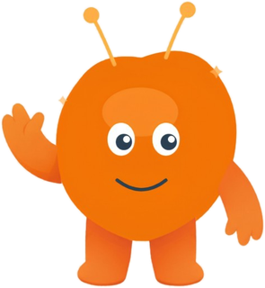
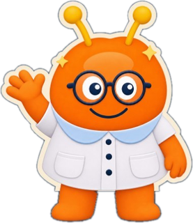

15–20%
de las personas tiene algún síntoma de dislexia
Muchas no reciben el apoyo que necesitan para leer y estudiar.
Herramientas para leer, organizarte y aprender a tu manera. Para estudiantes y escuelas, en cualquier aula.
En cualquier aula conviven estudiantes con TDAH, dislexia y distintas formas de aprender. La barrera no está en la persona: está en los materiales y en la falta de apoyos. Pasa en el campo y también en la ciudad.
Muchas no reciben el apoyo que necesitan para leer y estudiar.
Docentes con ganas de acompañar, que necesitan herramientas simples y que no les sumen trabajo.
We Grow App nació en Comandante Nicanor Otamendi, un pueblo de la provincia de Buenos Aires. Hoy acompaña a estudiantes y escuelas en cualquier aula.
Elegí un desafío y mirá cómo lo acompaña We Grow App.
Mirá cómo funcionan las herramientas y descubrí una nueva forma de acompañar el aprendizaje.
Ver en YouTubeLuma acompaña a cada persona en su recorrido de aprendizaje. Su nombre viene de la luz: hace más claro el camino de quien usa We Grow App. Orienta, sugiere y celebra los avances. Vos decidís qué apoyo usar.
Luma no diagnostica, no evalúa y no da consejos clínicos.

We Grow App le da a cada escuela una forma concreta de acompañar la diversidad del aula, sin sumar trabajo a sus docentes.

Escribinos y te respondemos en menos de 48 horas.
wegrowapplatam@gmail.comBuscamos aliados para llevar la educación inclusiva a más aulas de América Latina. Si tu organización trabaja en alguno de estos temas, contactanos.